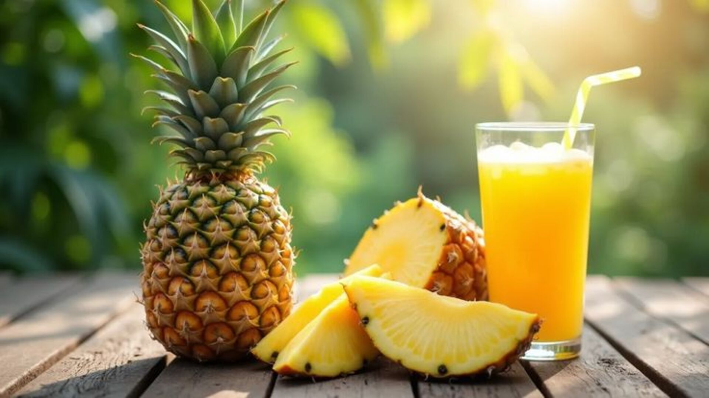
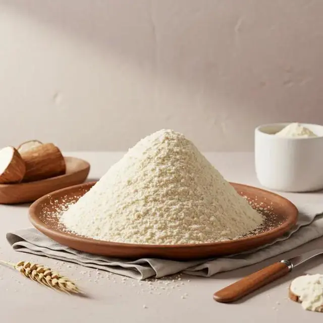

Produits Populaires

Maïs Bio Premium
Notre maïs biologique cultivé dans les régions Maritime et des Plateaux est reconnu pour sa qualité exceptionnelle. Grains dorés, récolte manuelle et séchage naturel au soleil.
Tous nos produits
 Maïs
Maïs
Maïs en Épis
Épis de maïs frais, récoltés à la main. Parfaits pour la cuisson au four ou au barbecue. Vendus par botte de 10 épis.
Manioc Frais
Racines de manioc de qualité supérieure, cultivées dans la région des Plateaux. Texture ferme et saveur authentique.
 Ananas
Ananas
Ananas Pain de Sucre
Ananas juteux et sucré, récolté à maturité dans nos champs de la région Maritime. Goût intense et chair tendre.
Farine de Maïs
Farine de maïs pure, moulue sur pierre traditionnelle. Sans additifs, idéale pour le porridge, le pain et les crêpes.

TransforméJus d'Ananas Naturel
Jus 100% naturel pressé à froid, sans sucre ajouté. Bouteille de 50cl. Frais, vitaminé et délicieusement sucré.

TransforméGari Premium
Gari de manioc fermenté et grillé, de texture fine et goût acidulé. Parfait pour l'ebba, le placali ou en accompagnement.